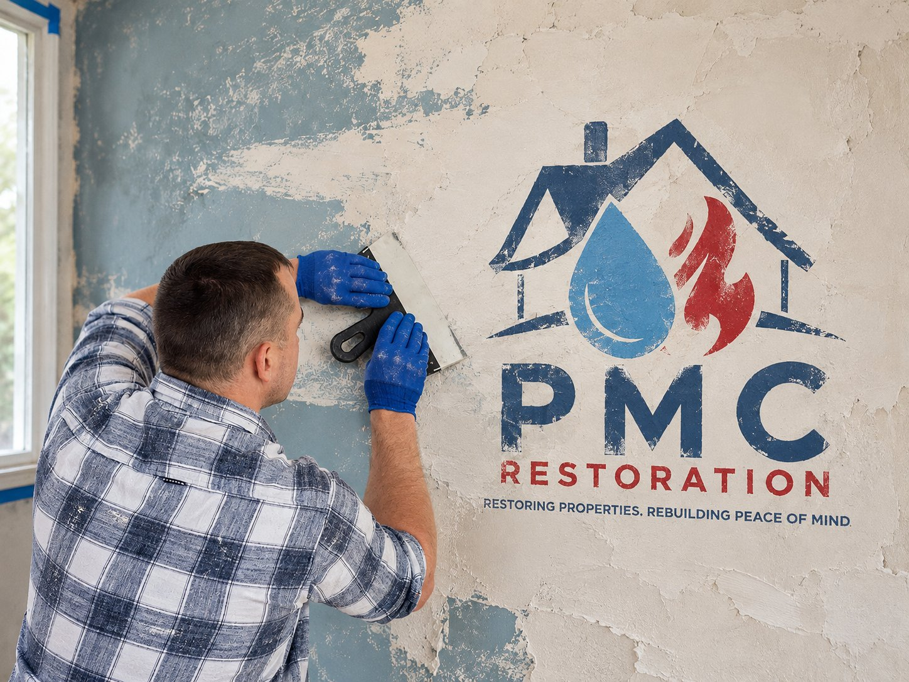

24/7 Emergency Response · Greater Boston & Massachusetts
When Property Damage Happens, PMC Restoration Takes It From Damage to Done.
PMC Restoration provides fast, professional restoration and reconstruction services for residential and commercial properties throughout Greater Boston and Massachusetts. From emergency water removal and structural drying to fire damage cleanup, demolition and complete reconstruction, we manage the restoration process from the first response through the final repair.

- 24/7 Emergency Response
- Residential & Commercial
- Complete Restoration & Reconstruction
- Greater Boston & Massachusetts
What We Do
Restoration Services From Emergency Response Through Reconstruction
Water Damage Restoration
Emergency water removal, extraction, drying and property restoration following leaks, flooding, burst pipes and other water-related damage.
Structural Drying
Professional drying of walls, floors, ceilings, framing and other building materials to help prevent additional damage.
Fire & Smoke Damage
Cleanup and restoration following fire, smoke and soot damage.
Emergency Cleanup & Demolition
Fast removal of damaged building materials, debris and unsafe components following property damage.
Reconstruction & Repairs
From drywall and painting to trim, carpentry and complete rebuilding.
Commercial Restoration
Restoration and reconstruction services for commercial properties, property managers and businesses.
Our Process
One Restoration Company From Emergency Response to Final Repair
You don't need one company to clean up the damage and another company to rebuild it. PMC Restoration can manage the property from initial damage through reconstruction.
Emergency Response
Damage Assessment
Water Removal / Cleanup / Drying
Demolition & Preparation
Reconstruction & Finishing
Water Damage
Water Damage Requires Fast Action
Water can quickly move through flooring, drywall, insulation and structural materials. PMC Restoration provides emergency water extraction, moisture assessment and structural drying designed to remove water and properly dry affected areas before repairs begin.

Property Damage Doesn't Keep Business Hours. Neither Do We.
PMC Restoration provides 24/7 emergency response for water damage, fire damage, storm-related damage and other restoration emergencies.
Call 617-938-0437Who We Serve
Restoration Services for Homes and Businesses
Residential Restoration
Commercial Restoration


Why PMC
Why Property Owners Call PMC Restoration
- 24/7 emergency response
- Restoration and reconstruction under one company
- Residential and commercial expertise
- Water extraction and professional structural drying
- Fire and smoke damage restoration
- Full demolition and cleanup services
- Complete repairs and reconstruction
- Clear communication throughout the project

Who We Work With
Working With Property Owners, Managers, Contractors and Restoration Partners
PMC Restoration works with homeowners, commercial property owners, property managers, contractors and restoration professionals throughout Massachusetts.
When appropriate, our team can document the restoration process and coordinate project requirements with other parties involved in the property recovery.
Service Area
Serving Greater Boston and Massachusetts
FAQ
Frequently Asked Questions
PMC Restoration provides 24/7 emergency response throughout Greater Boston and Massachusetts.
We handle burst pipes, flooding, leaks, storm-related water intrusion and more, from extraction through structural drying.
Yes. We provide professional structural drying for walls, floors, ceilings and framing.
Yes. PMC Restoration handles reconstruction and repairs after mitigation is complete, so you don't need a separate contractor.
Yes, we restore offices, retail spaces, commercial buildings and multi-unit properties.
Yes. We provide fire, smoke and soot cleanup along with the reconstruction that follows.
Get Help Now
Tell Us What Happened
Contact PMC Restoration
24/7 Emergency: 617-938-0437
Email: Info@pmcrestoration.com
Service Area: Greater Boston & Massachusetts
Hours: 24/7 Emergency Response
Damage Doesn't Have to Become a Bigger Problem.
PMC Restoration is available 24/7 for emergency property restoration.